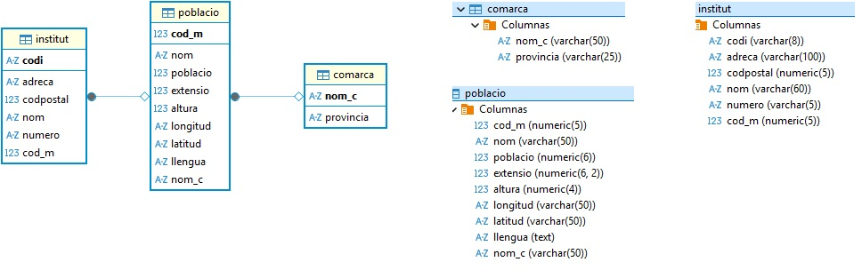
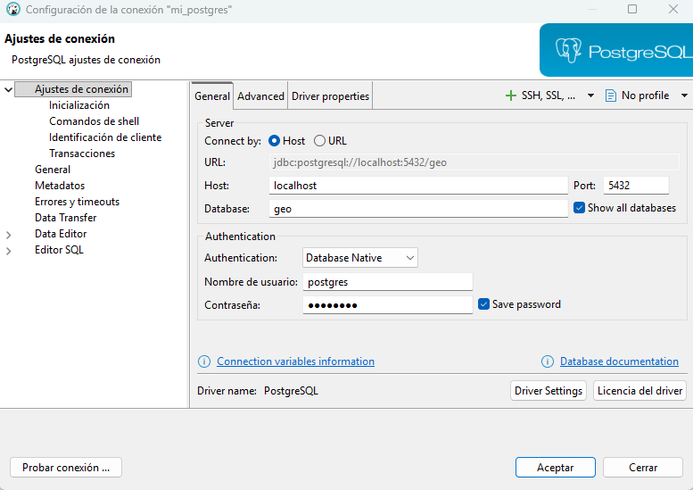

Preparación de PostgreSQL y la BD geo¶
Hasta ahora hemos trabajado con ejemplos de operaciones CRUD (Crear, Leer, Actualizar y Borrar) utilizando SQLite, una base de datos ligera, fácil de usar y sin necesidad de servidor, ideal para iniciarse en el acceso a datos desde Kotlin.
Sin embargo, en entornos reales y profesionales, lo más habitual es trabajar con sistemas de gestión de bases de datos más potentes y completos, como PostgreSQL.
Actualmente trabajaremos con PostgreSQL en entorno local, replicando la base de datos mediante Docker. Este enfoque garantiza que todos los equipos tengan la misma configuración y evita depender de servicios remotos externos.
Opcionalmente, también se puede usar una instalación local nativa de PostgreSQL con los mismos scripts y consultas.
Vamos a replicar la base de datos geo en un servidor PostgreSQL ejecutado dentro de un contenedor Docker, creando sus tablas y cargando los datos necesarios para las prácticas. La imagen del modelo relacional que aparece a continuación muestra la estructura de esta base de datos: las tablas comarca, poblacio e institut, sus campos y las relaciones entre ellas.
Esquema de la BD geo

Pasos para replicar la BD geo en Docker
- Se instala PostgreSQL con Docker usando un
docker-compose.yml. - Se arranca el contenedor y se verifica con
docker ps. - Se conecta la base de datos con DBeaver (
localhost:5432). - Se crean las tablas
COMARCA,POBLACIOeINSTITUT. - Se insertan los datos iniciales desde los scripts
.sql.
1️⃣ Instalación de PostgreSQL con 🐳 Docker¶
Para crear un contenedor de PostgreSQL en nuestro equipo utilizaremos Docker Compose.
💡 Si eres usuario de Windows o Mac, instala Docker Desktop.
Después de instalarlo, inicia Docker Desktop y espera a que indique que Docker está en ejecución antes de continuar.
Si usas Ubuntu o Debian, asegúrate de tener instalados Docker Engine y el complemento Docker Compose.
1.1. Docker-compose.yml¶
Para configurar y gestionar los servicios de la aplicación mediante Docker Compose, es necesario crear un archivo de configuración que defina los servicios y sus parámetros.
Crea un archivo llamado docker-compose.yml con el contenido que se indica a continuación. Puedes guardarlo en cualquier carpeta de tu sistema.
services:
db:
image: postgres:16.4
container_name: mi_postgres
environment:
POSTGRES_PASSWORD: postgres
POSTGRES_USER: postgres
POSTGRES_DB: geo
volumes:
- db_data:/var/lib/postgresql/data
ports:
- "5432:5432"
volumes:
db_data:
Solo para el entorno de prácticas
Las credenciales postgres/postgres simplifican el trabajo en local. No deben utilizarse en producción ni en un servidor accesible desde Internet.
1.2. Levantar el servicio¶
Posiciónate en el terminal en el directorio donde está el fichero docker-compose.yml y ejecuta:
1.3. Verificar el contenedor¶
Para comprobar que PostgreSQL está activo, ejecuta en el terminal:
El resultado debe mostrar una entrada similar a la siguiente:
CONTAINER ID IMAGE COMMAND CREATED STATUS PORTS NAMES
327fd50443a7 postgres:16.4 "docker-entrypoint.s…" 2 minutes ago Up 2 minutes 0.0.0.0:5432->5432/tcp mi_postgres
Si aparece el contenedor mi_postgres con estado Up, significa que el servicio de PostgreSQL está funcionando correctamente.
2️⃣ Conexión de PostgreSQL con DBeaver¶
Una vez el contenedor de PostgreSQL está activo, podemos conectarnos mediante el cliente gráfico DBeaver.
2.1. Crear nueva conexión¶
- Abre DBeaver.
- Selecciona Nueva conexión → PostgreSQL.
- Introduce los siguientes datos de conexión:
| Campo | Valor |
|---|---|
| Nombre de conexión | mi_postgres |
| Server host | localhost |
| Port | 5432 |
| Database | geo |
| User name | postgres |
| Password | postgres |

Haz clic en Test Connection para comprobar la conexión.
3️⃣ Creación de la base de datos geo¶
En la conexión local de PostgreSQL (ya desde DBeaver o cualquier cliente SQL), ejecuta los siguientes scripts para crear las tablas del esquema public.
3.1. Creación de la tabla COMARCA¶
CREATE TABLE public.comarca (
nom_c varchar(50) NOT NULL,
provincia varchar(25) NULL,
CONSTRAINT cp_com PRIMARY KEY (nom_c)
);
3.2. Creación de la tabla POBLACIO¶
CREATE TABLE public.poblacio (
cod_m numeric(5) NOT NULL,
nom varchar(50) NOT NULL,
poblacio numeric(6) NULL,
extensio numeric(6, 2) NULL,
altura numeric(4) NULL,
longitud varchar(50) NULL,
latitud varchar(50) NULL,
llengua bpchar(1) NULL,
nom_c varchar(50) NULL,
CONSTRAINT cp_pobl PRIMARY KEY (cod_m),
CONSTRAINT ce_pob_com FOREIGN KEY (nom_c)
REFERENCES public.comarca(nom_c)
ON UPDATE CASCADE
);
3.3. Creación de la tabla INSTITUT¶
CREATE TABLE public.institut (
codi varchar(8) NOT NULL,
nom varchar(60) NULL,
adreca varchar(100) NULL,
numero varchar(5) NULL,
codpostal numeric(5) NULL,
cod_m numeric(5) NULL,
CONSTRAINT cp_ins PRIMARY KEY (codi),
CONSTRAINT ce_ins_pob FOREIGN KEY (cod_m)
REFERENCES public.poblacio(cod_m)
);
4️⃣ Carga de datos iniciales¶
Para completar la base de datos, ejecuta los siguientes scripts SQL desde DBeaver o desde el terminal de PostgreSQL.
Cada script se encarga de insertar los datos de las tablas creadas previamente.
Una vez preparadas las tablas y los datos, continúa con la conexión a PostgreSQL desde Kotlin.